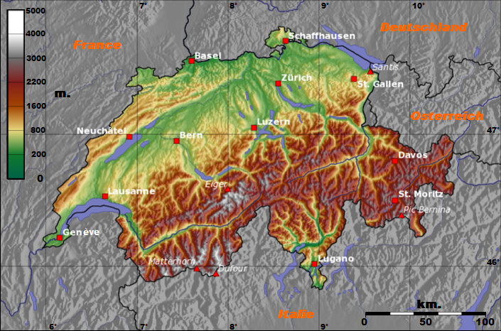
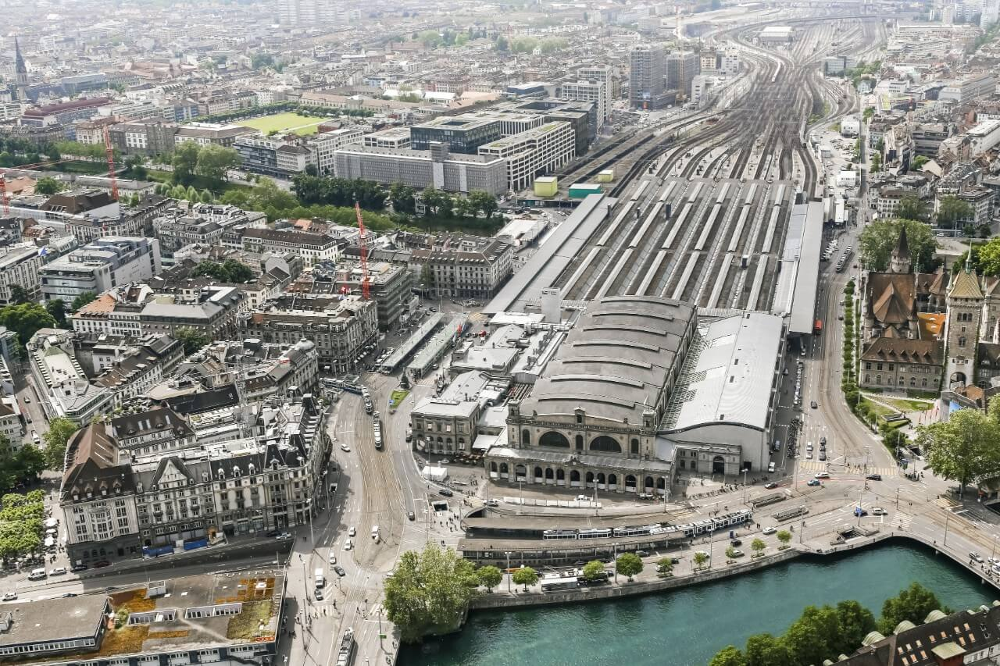
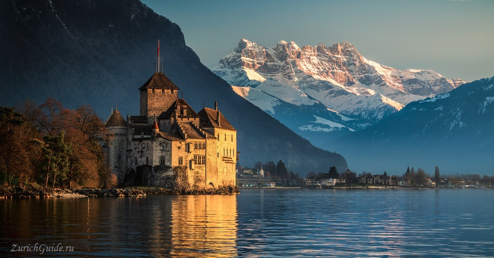
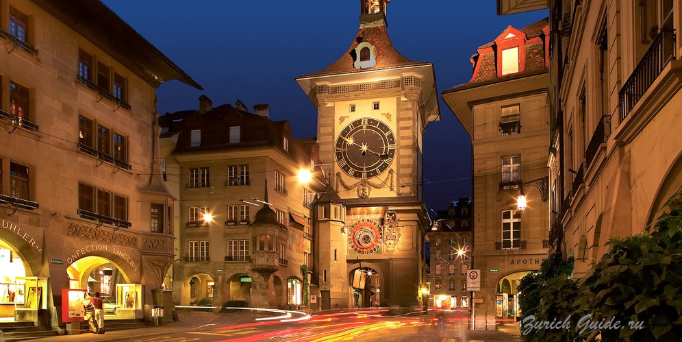
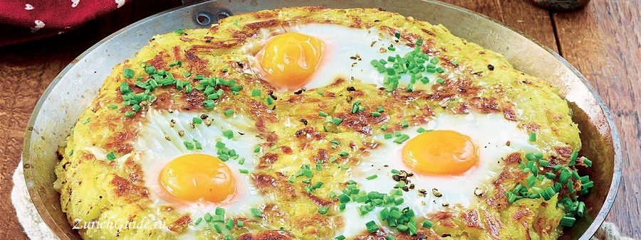
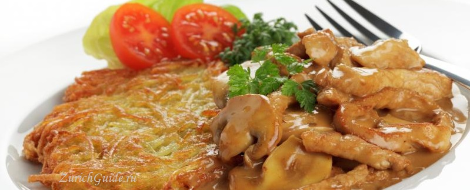
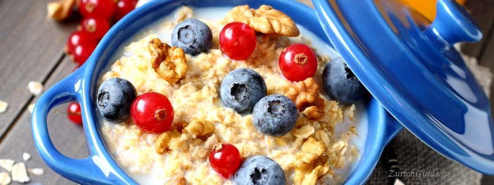
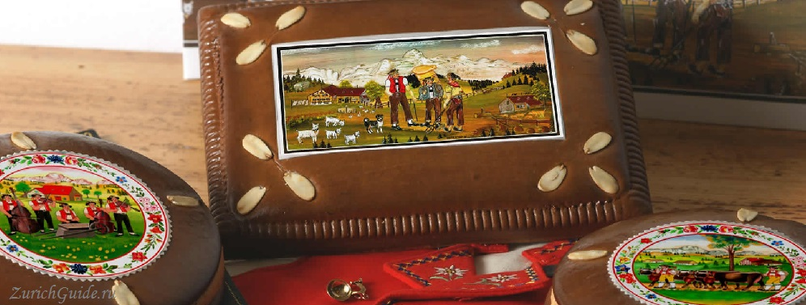

Географическое положение
Швейцария находится в самом центре Европы и граничит на западе с Францией, на севере - с Германией, на востоке - с Австрией и Лихтенштейном, на юге - с Италией.
Выхода к морю страна не имеет.
Общая площадь - 41,3 тысячи кв. км.
(Информация взята с сайта История)

Климат
Климат Швейцарии разнообразен, что обуславливается горным ландшафтом. Тем не менее, в стране преобладает
континентальный климат, который типичен для Центральной Европы.
На юге, в кантоне Тичино, климат практически средиземноморский. На большей части страны преобладают
температуры от 20 до 25 градусов с июня по сентябрь и от 1 до 6 градусов с ноября по март.
Зимой в стране дует сильный тёплый ветер под названием Фён. Часто он является причиной снежных обвалов.
(Информация взята с сайта Климат)
История
Основание самой Швейцарии
Конец наполеоновских войн. Европейские державы, включая Россию, заинтересованы в возникновении и сохранении нейтральной независимой Швейцарии с целью нейтрализации стратегических альпийских перевалов. К Швейцарии отходят ставшие кантонами Вале, Невшатель (является одновременно владением Пруссии) и Женева. Швейцария становится межгосударственным объединением самостоятельных, слабо связанных между собой кантонов. На Венском конгрессе европейские державы признают «постоянный нейтралитет» Швейцарии.
(Информация взята с сайта История)
Достопримечательности
Гроссмюнстер
Центральный вокзал Hauptbahnhof

Цюрих

Если вы относитесь к числу ценителей религиозных памяток, тогда вам точно понравится величественная обитель, расположенная в самом центре Цюриха. Считается, что возведен собор был в 9 веке, а место выбрано неспроста. Рядом в свое время были обнаружены могилы святых Регулы и Феликса. В описании этой достопримечательности сказано, что строительство тогда затянулось, в эксплуатацию здание ввели только в 12 веке. На сегодня эта достопримечательность Швейцарии относится к числу самых посещаемых, в этом месте туристы получают возможность проникнуться многовековой историей храма.
Первая достопримечательность, с которой обычно знакомятся гости Цюриха – это центральный железнодорожный вокзал Hauptbahnhof. Сюда прибывают не только междугородние составы, но и поезд, следующий из аэропорта. Доехать на нем можно за 10 минут, заплатив за билет 7 франков.
Шильонский замок

Монтре
Расположенный в фантастическом месте на восточной стороне Женевского озера, обрамленный скалистыми горам, Шиольнский замок является одной из главных достопримечательностей Швейцарии. Как будто вырастающая прямо из воды, эта средневековая крепость и известная тюрьма — одна из наиболее сохранившихся образцов средневековой архитектуры в Европе. Позвольте себе неспеша прогуляться по Большому Залу, Залу Юстиции, Арсеналу, часовне Святого Георгия и другим залам замка, откроющим Вам историю этого форта. У вас будет возможность окунуться в аутентичную атмосферу тюрьмы Бонивара, а также полюбоваться великолепными пейзажами берега Женевсокого озера, пешком или на одном из круизных корабликов.
Пик Маттерхорн
Церматт

Именно здесь, в небольшой деревеньке Церматт, любители природы начинают свои маршруты в великолепное королевство Швейцарских Альп! Здесь вас ждут свыше 400 км пешеходных троп, ведущих к великолепным пейзажам, с захватывающими видами на Альпы. Здесь вы почувствуете себя ничтожным по сравнению с величием взрезающего небо пиком Маттерхорн. И хотя это не самая высокая гора в Швейцарии (4478 метров над уровнем моря), это определенно один из самых известных пиков, ставший для многих настоящим испытанием. Немало опытных альпинистов полегло здесь в попытке одолеть неприступные крутые склоны Маттерхорна. В любом случае ваш маршрут начнется от Церматта — хотя и небольшого, но одного из самых престижных горнолыжных курортов Европы.
Старый город

Берн
Расположенный на холме и окруженный с трех сторон рекой Ааре, средневековый Берн сохранил шарм былого времени, с его площадями из песчаника, часовой башней и многочисленными аркадами, обрамляющими улицы. Мощеные улицы, журчащие фонтаны, сказочные часы и украшенные аркады — все это отражает концепцию градостроительства 11 и 12 вв. Если вы оказались в Берне, не пропустите Zytglogge — часовую башню. С ее двигающимися фигурками и тюрьмой в бэкграунде истории, это главная достопримечательность города. Среди других достопримечательностей Берна — квартира Альберта Эйнштейна, кафедральный собор (Мюнстер) и Медвежья Яма, теперь превращенная в целый парк на склоне реки, где можно полюбоваться символом Берна — лохматыми мишками. Медведи-родители были подарены городу тогда президентом Медведевым. Символично, да
(Информация взята с сайта Достопримечательности 1 и Достопримечательности 2)
Кухня

|

|

|

|
(Информация взята с сайта Кухня)